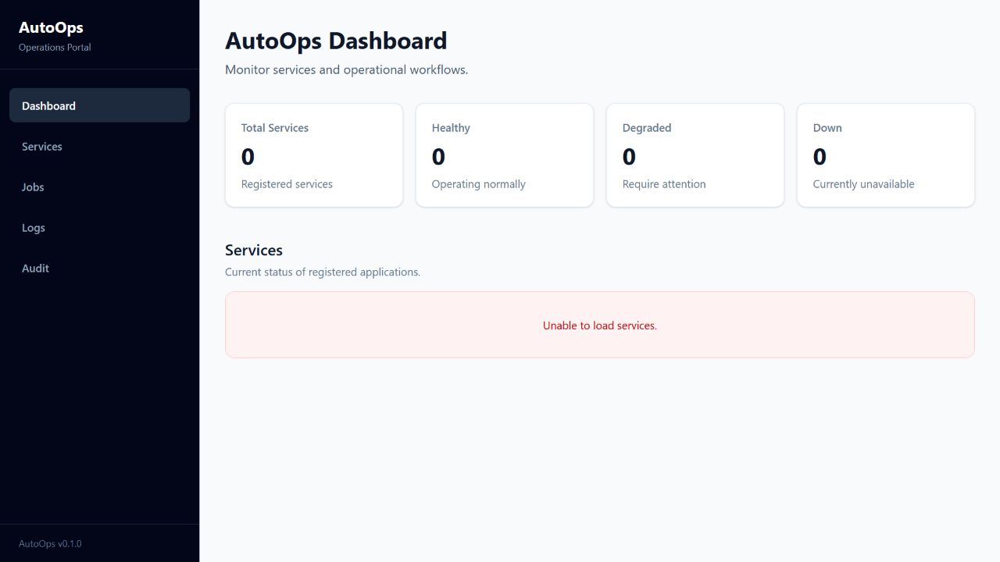

PUBLIC BRANCH UI · LOCAL API OFFLINEOPERATIONS PORTAL RECONSTRUCTION
AutoOps Portal
A public, independent reconstruction informed by operational workflows from my professional experience. It is not Bottomline production source code.
Explore the engineering
Give engineers one place to register services, inspect health, launch checks and review jobs and audit events.
Built the React client, Spring Boot APIs and service layer, PostgreSQL model and Flyway migrations, plus Docker-based local database setup.
Health checks are persisted as asynchronous jobs with separate audit events. This improves traceability while adding lifecycle and failure-state complexity.
Service create/edit/delete/list, search and filters, health-check jobs, jobs and audit views, request validation and structured error handling.
The branch currently has a Spring context-load test only. Broader API/UI tests, clearer setup documentation and Redis integration are not present yet.
Separated API, service and persistence responsibilities and used versioned migrations instead of schema auto-creation.